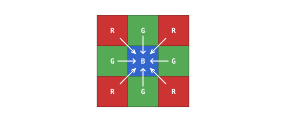

6.11. Debayering¶
The raw Bayer frame carries only one colour channel per pixel. Turning it into a normal three-channel RGB image means filling in the two missing channels at every pixel by interpolating from nearby pixels of the right colour. That interpolation is debayering (also called demosaicing). A handful of algorithm families dominate.
6.11.1. Super-pixel¶
The cheapest approach collapses every 2x2 Bayer tile – one red cell, one blue cell, and two green cells – into a single output pixel:
the red channel is the red cell’s value;
the blue channel is the blue cell’s value;
the green channel is the average of the two green cells.
Each 2x2 input tile becomes one output pixel, so the finished image is half the width and half the height of the sensor, with a quarter of the pixel count. Super-pixel is fast and free of interpolation artefacts, but the resolution cost makes it a last resort – it is rarely used.
6.11.2. Bilinear¶
Bilinear interpolation averages the nearest pixels of the right colour rather than copying or summarising. The exact averaging depends on which colour the centre pixel records, because the four cases distribute the missing channels around the 3x3 neighbourhood differently.
Green pixel in a red-green row. The missing red value averages the two red neighbours to the left and right; the missing blue averages the two blue neighbours above and below.

The missing red comes from the horizontal red neighbours; the missing blue from the vertical blue neighbours.¶
Green pixel in a green-blue row. Same shape with red and blue swapped. The missing red value averages the two red neighbours above and below; the missing blue averages the two blue neighbours to the left and right.

The missing red comes from the vertical red neighbours; the missing blue from the horizontal blue neighbours.¶
Red pixel. The missing green value averages the four cardinal green neighbours (above, below, left, right). The missing blue averages the four diagonal blue neighbours.

The missing green comes from the four cardinal green neighbours; the missing blue from the four diagonal blue neighbours.¶
Blue pixel. Mirror of the red case. The missing green averages the four cardinal green neighbours, and the missing red averages the four diagonal red neighbours.

The missing green comes from the four cardinal green neighbours; the missing red from the four diagonal red neighbours.¶
Bilinear keeps the sensor’s full resolution and is smooth enough for most uses, but it still shows artefacts at edges. A sharp transition between two colours crosses the pixel grid in a particular orientation, and averaging across the edge softens it slightly. Where the colour and luminance edges do not line up exactly, faint coloured fringes appear in the output.
6.11.3. Beyond bilinear¶
A range of better debayer algorithms exists. Some use larger neighbourhoods than bilinear’s small cross of same-colour neighbours and weigh the samples with more carefully chosen coefficients; others detect the direction of local edges and bias the interpolation along that direction so an edge running across the pixel grid stays sharp instead of softening. Either approach reduces the colour fringes and edge softening bilinear leaves behind, at the cost of more arithmetic per pixel and more silicon (or more compute on the MCU side).
The debayer quality available on any given OpenMV Cam is platform-specific – it depends on what the sensor and MCU on that camera provide.
6.11.4. Where debayering runs¶
The image signal processor (ISP) – on the sensor chip itself or on the MCU side – debayers each frame before it leaves the imaging pipeline in most cases. User code receives a finished three-channel RGB image without ever touching the raw mosaic.
The ISP can also be told to pass the raw Bayer frame through unchanged. Raw Bayer takes less memory than the debayered image – one byte per pixel versus three – which makes it useful when frame storage is the bottleneck, when capturing for off-line processing, or when the project wants to apply a custom debayer algorithm in software.